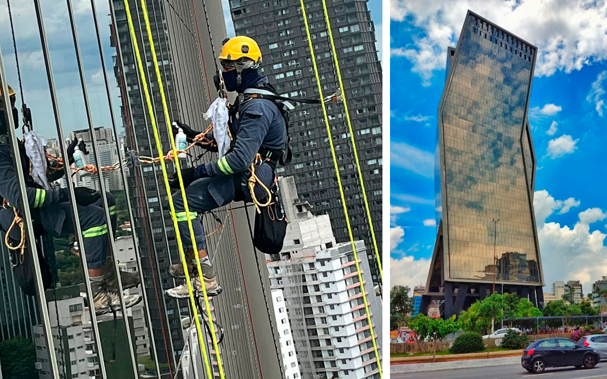
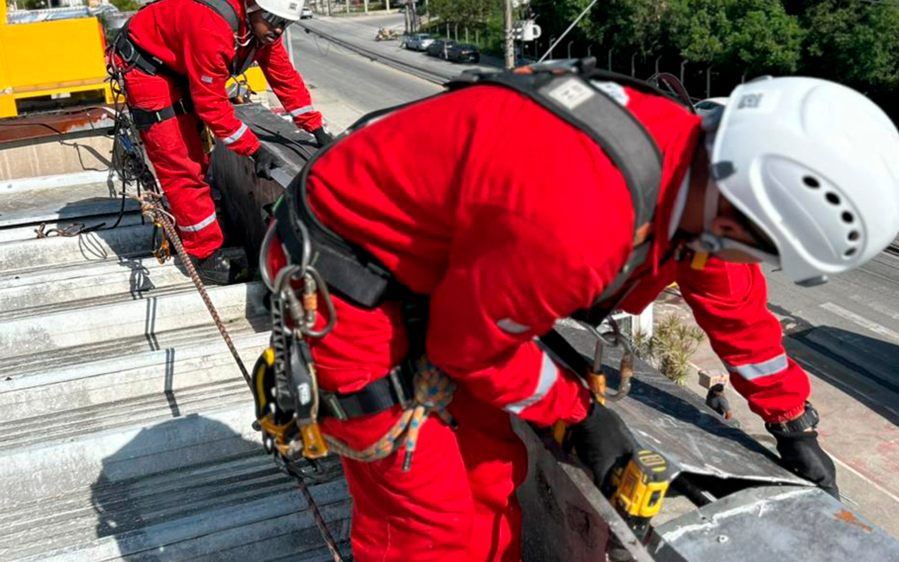

A Evolution Alpinismo Industrial oferece soluções inovadoras para manutenção, limpeza e inspeções em altura – sem andaimes!
Descubra a técnica que revoluciona a manutenção em altura!

O alpinismo industrial é uma técnica especializada de acesso por corda que permite a realização de serviços em altura com máxima segurança e eficiência. Em São Paulo, essa abordagem revolucionária elimina a necessidade de andaimes, proporcionando maior agilidade e flexibilidade na execução de manutenções prediais, limpezas de fachadas, inspeções técnicas e reparos estruturais em locais de difícil acesso.
Com equipamentos modernos e certificados (IRATA) e profissionais altamente treinados e qualificados, essa técnica é ideal para ambientes onde o acesso convencional se torna inviável ou muito custoso. Além disso, o alpinismo industrial possibilita a continuidade das operações sem interrupções significativas, reduzindo riscos e otimizando custos para empresas e condomínios em São Paulo.
Procedimentos rigorosos e equipamentos certificados garantem a integridade dos trabalhos.
Execução rápida sem a necessidade de estruturas pesadas.
Técnicas modernas que asseguram a durabilidade e a integridade das instalações.
Profissionais certificados e treinados para operar conforme as normas de segurança.
Essa técnica inovadora é amplamente utilizada em manutenção predial, limpeza de fachadas, inspeções técnicas e instalação de equipamentos em São Paulo, sempre com foco em segurança, eficiência e custo-benefício. Ao optar pelo alpinismo industrial da Evolution, sua empresa conta com a expertise necessária para enfrentar desafios de acesso e garantir a continuidade dos seus processos com a mais alta qualidade.

Entre os principais benefícios do alpinismo industrial em São Paulo, destacam-se a redução de custos operacionais, a minimização dos riscos de acidentes e a flexibilidade para trabalhar em diferentes tipos de estruturas e ambientes com acesso por corda.
Soluções seguras e inovadoras para serviços em altura.
Entre em ContatoEncontre respostas para as perguntas mais frequentes sobre o que é alpinismo industrial, suas aplicações e benefícios.